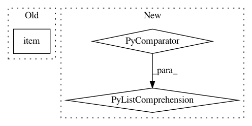

766bd71d6cca7313988b02784be6d56834e8c744,kornia/filters/kernels.py,,get_motion_kernel2d,#Any#Any#Any#,447
Before Change
kernel_tuple: Tuple[int, int] = (kernel_size, kernel_size)
// direction from [-1, 1] to [0, 1] range
direction = (torch.clamp(direction, -1., 1.).item() + 1.) / 2.
kernel = torch.zeros(kernel_tuple, dtype=torch.float)
kernel[kernel_tuple[0] // 2, :] = torch.linspace(direction, 1. - direction, steps=kernel_tuple[0])
kernel = kernel.unsqueeze(0).unsqueeze(0)
After Change
// Element-wise linspace
kernel[:, kernel_tuple[0] // 2, :] = torch.stack(
[(direction - (1 / (kernel_tuple[0] - 1)) * i) for i in range(kernel_tuple[0])], dim=-1)
kernel = kernel.unsqueeze(1)
// rotate (counterclockwise) kernel by given angle
kernel = rotate(kernel, angle, mode="nearest", align_corners=True)
In pattern: SUPERPATTERN
Frequency: 3
Non-data size: 3
Instances
Project Name: arraiy/torchgeometry
Commit Name: 766bd71d6cca7313988b02784be6d56834e8c744
Time: 2020-10-19
Author: sj8716643@126.com
File Name: kornia/filters/kernels.py
Class Name:
Method Name: get_motion_kernel2d
Project Name: rusty1s/pytorch_geometric
Commit Name: 2578ba8b844bdceb9333fa73a909b2aa9436f867
Time: 2020-06-30
Author: luca.cavallery@gmail.com
File Name: examples/pna.py
Class Name:
Method Name: train
Project Name: havakv/pycox
Commit Name: d01864a6b840a6ca5da581c5e5fe90b74da8d2b8
Time: 2018-05-05
Author: havard@DN0a22c81b.SUNet
File Name: pycox/callbacks.py
Class Name: MonitorCoxLoss
Method Name: _run_dataloader